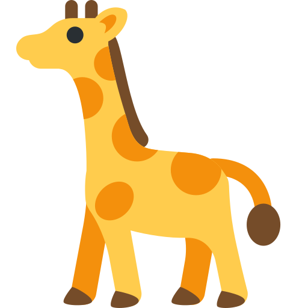

-

Nhan Nguyen
About Nhan Nguyen: A rising third year at San Francisco State
University. Nhan saw a lack of options when he was searching for
online book stores. That's when he pitched the idea for a modern
shopping experience for books. Nhan specializes in system design and
architecture for the website.
-
Cesar Herrera
About Cesar Herrera: A third year at San Francisco State University.
Cesar had a passion for fine literature when he was pitched the idea
for this site from Nhan. Outside of the company, Cesar enjoys taking
in the California sun and expanding his skills. He’s our resident
User Experience design expert.
-
Ken Gu
About Ken Gu: Also a third year at San Francisco State University.
Ken was classmates with all the other founding giraffes. Approached
by them to work on a site, Ken brings technical skills that binds
the website together. As a film enthusiast and art curator, he
frequents exhibitions held by museums.
-
Austin Ng
About Austin Ng: Also a third year at San Francisco State
University. Austin was classmates with all the other founding
giraffes. He’s head of Customer Relations and manages the tickets.
Your satisfaction is his guarantee. Outside he enjoys testing his
abilities against physical activities.